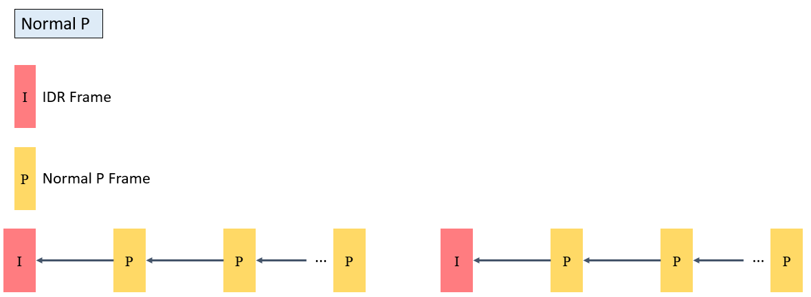
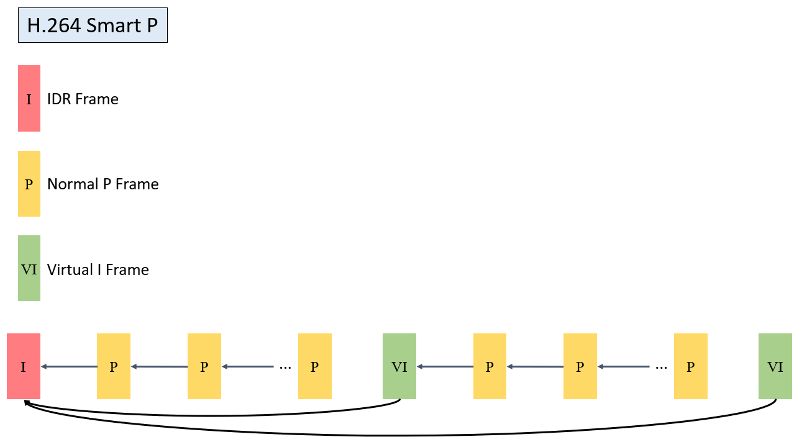
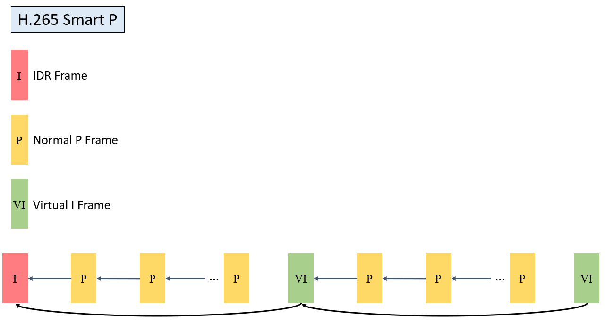

7.2. 设计概述¶
7.2.1. 编码数据流程图¶

VENC模块的输入为待编码的影像，输出为编码后的Bitstream。VENC含有两个子模块，Receiver和Encoder。
Receiver
接收影像的输入
Encoder
将收到的影像进行图片及视频编码，转换成 Encoded Bitstream，目前支持的视讯标准为
JPEG
支持的影像格式为
YUV422
YUV420
NV12 / NV21
MJPEG
支持的影像格式和JPEG相同
H.264
支持的影像格式为
NV12
H.265
支持的影像格式为
NV12
7.2.2. 视频编码信道¶

视频编码信道为视频编码的基本操作单元，内部主要包含VENC相关功能，信道相关设定。系统上可以有多个视频编码信道，各信道独立运作。各信道建立后，用户可以依需求设定通道基本参数，如影像分辨率、编码 Bitrate、RC机制等，相关的参数会对VENC初始化。
7.2.3. 码率控制¶
RC为Encoder中控制Bitrate和Video Quality的主要模块，主要藉由各视讯标准中的QP这个参数，进一步控制影像质量，当QP变大时，编码出来的数据量会变小，但Video Quality会变差；当QP变小时，编码出来的数据量会变大，但Video Quality会变好。
视频编码通常会与RC同时运作，如果是图片编码 (如 JPEG)，因为只有单张图片，不会需要此模块。
模式 |
JPEG |
H.264 |
H.265 |
Fixed QP |
支持 |
支持 |
支持 |
CBR |
支持 |
支持 |
支持 |
VBR |
不支持 |
支持 |
支持 |
AVBR |
不支持 |
支持 |
支持 |
7.2.4. Fixed QP¶
在统计时间内，影像中的所有MB使用同一个QP值。
7.2.5. CBR¶
CBR (Constant Bit Rate) 固定码率， 动态控制QP，使得 Encoded Bitstream 在设定的时间区间内，维持在想要的 bitrate。
主要的参数如下：
u32StatTime Bitrate统计时间
- 单位时间为秒 (second)，encoder会在设定时间内统计Bitrate进而调整影像质量，符合想要的Bitrate。当此值愈小时，统计区间小，影像品质变化幅度会相对比较大，每一张 Frame 压缩完后，对接下来的压缩有较大的影响，视讯质量比较不稳定。此值大时，统计区间大，每一张Frame压缩完后的影响程度比较小，影像变化的幅度比较小，视讯质量比较稳定。
7.2.6. VBR¶
VBR(Variable Bit Rate) 可变码率，允许码率在设定的统计时间内，动态调整整体Bitrate，可使得影像质量相对稳定。
u32MaxBitRate 最大码率
设定在统计时间内，最大可使用的码率
u32MinQp
设定最小可使用的 MB QP，限制影像的最佳质量，不会使用过高的Bitrate
7.2.7. AVBR¶
AVBR(Adaptive Variable Bit Rate)自适应可变码率。依场景运动程度动态调整统计时间目标码率，码率控制内部作场景运动程度判断。场景运动程度越大，目标码率越高，而当场景偏向静止时，将自动降低目标码率。
u32MaxBitRate 最大码率
设定在统计时间内，最大可使用的码率
u32MinStillPercent
场景静止状态时，目标码率与最大码率之百分比
MinBitrate = MaxBitrate*ChangePos*MinStillPercnet
根据场景运动程度，目标码率在MinBitrate与MaxBitrate间调适
U32MaxStillQp
场景完全静止时，maxQp趋向MaxStillQp。以保证静止场景画面质量。
7.2.8. GOP结构¶
H.264 和 H.265 对于GOP结构支持的状况如下。
GOP模式 |
H.264 |
H.265 |
|---|---|---|
NormalP |
支持 |
支持 |
SmartP |
支持 |
支持 |
NormalP的GOP结构如下
IDR 帧出现周期为 u32Gop
{kind=link}

SmartP的GOP结构如下
VI帧出现周期为u32Gop，该帧只向前参考邻近之IDR帧
IDR帧出现周期为u32BgInterval，该 IDR 帧为长期参考帧
{kind=link}

{kind=link}

7.2.9. 高级跳帧¶
H.264 和 H.265均支持1倍、2倍、以及4倍跳帧参考模式。默认为1倍(不跳帧) 。
2倍跳帧参考模式示意如下

7.2.10. ROI¶
ROI（Region Of Interest）编码：感兴趣区域编码。
用户可以通过配置 ROI 区域，调适该区域的图像 Qp，实现图像中局部区域画质的差异化。
H.264 和 H.265均支持 8 个 ROI 设置，重复区域按照 0～7 的ROI索引号依次提高优先级
ROI 区域可配置绝对Qp和相对Qp两种模式。
绝对Qp 模式：ROI 区域的Qp为用户设定的 Qp 值。
相对Qp模式：ROI区域的Qp为码率控制之Qp加上用户设定的Qp偏移值。
注意事项
当码率控制模式不为Fixed QP模式时，ROI区域可配置。
H.264当ROI始能时，宏块级码率控制失效。
绝对Qp模式因为码率控制调适宏块QP，实际编码QP与设置之QP可能会有些差异。
7.2.11. 编码码流帧配置模式¶
压缩后的编码码流，使用CVI_VENC_GetStream取得Encoded Bitstream，相关信息如下：
u32PackCount
- 此张Frame含有多少个NAL packet，例如目前压缩格式为H.264，第一张 为I frame，此值会为 3 (含SPS，PPS，1 Slice)，第二张Frame为 1(含1 Slice)。
pstPack
- 根据u32PackCount的数量，会含有pstPack[0] ~ pstPack[u32PackCount - 1] 的资料。如第一张I Frame，会有pstPack[0]，pstPack[1]，pstPack[2]
下图为第一张 I Frame的Bitstream资料

7.2.12. 多编码器并行编码¶
H.264 和 H.265 支持多路编码，目前默认最多为 8 路并行编码，以下为注意事项
编码整体效能需要低于硬件设计限制，超过会无法达到设定的framerate
所需要的Frame Buffer会随着路数的增加成正比增加，DRAM使用量亦随之增加
7.2.13. 编码帧缓存计算¶
编码帧缓存（参考帧和重构帧）分配支持两种方式：PrivateVB 池方式和 UserVB 池方式。 编码 PrivateVB 池方式：创建编码通道时由 VENC 创建私有VB池作为该通道的参考帧和重构帧Buffer。编码UserVB池方式（仅 H.264/H.265 编码支持）：创建编码通道时不分配参考帧和重构帧Buffer，而是由用户调用接口CVI_VB_CreatePool
创建一个视频缓存VB池，再通过调用接口CVI_VENC_AttachVbPool把某个编码通道绑定到固定的视频缓存VB池中。两种方式可通过调用 CVI_VENC_SetModParam接口设置相应的模块参数来选择。 模块参数设置为 VB_SOURCE_PRIVATE表示使用编码PrivateVB池方式；设置为 VB_SOURCE_USER表示使用编码UserVB池方式。
UserVB模式下，编码帧消耗内存最大值参考如下
H.264 |
H.265 |
|
|---|---|---|
FrameSize |
(align(width,32)) x (align(height,32)) x 1.5 x 2 |
align((width x height x 1.5), 4096) x 2 |